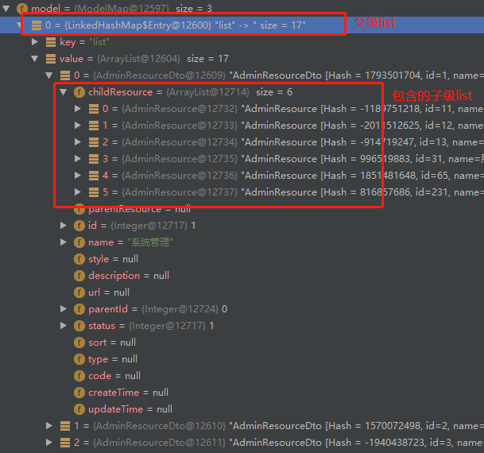
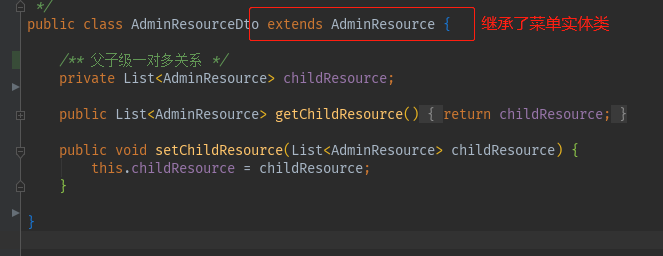
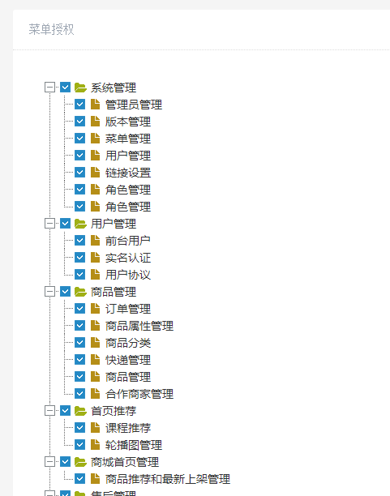

后台添加角色后，需要给角色授权菜单，不同的角色有不同的菜单。#
两个点：
1.菜单表结构，父子级在一个表中。dto的使用
2.树状图插件zTree的使用，以及角色菜单的回显
涉及到的表#
admin_resource 菜单表
admin_role 角色表
admin_role_resource 角色与菜单中间表
admin_user 管理员表
admin_user_role 用户-角色关联表
1
2
3
4
5
6
7
8
9
10
11
12
13
14
15
|
CREATE TABLE `admin_resource` (
`id` int(10) unsigned NOT NULL AUTO_INCREMENT COMMENT '主键',
`name` varchar(20) NOT NULL COMMENT '资源名称',
`style` varchar(255) DEFAULT NULL COMMENT '资源样式',
`description` varchar(255) DEFAULT NULL COMMENT '资源描述',
`url` varchar(255) DEFAULT NULL COMMENT '资源访问的url',
`parent_id` int(11) NOT NULL DEFAULT '0' COMMENT '父资源ID，0-无父资源',
`status` int(2) NOT NULL DEFAULT '1' COMMENT '启用状态 0-未启用 1-启用',
`sort` int(2) NOT NULL DEFAULT '1' COMMENT '排序位置',
`type` int(2) NOT NULL DEFAULT '0' COMMENT '资源类型 0-未知类型 1-菜单 2-按钮 3-图片',
`code` varchar(255) NOT NULL COMMENT '资源标识代码',
`create_time` datetime DEFAULT NULL COMMENT '创建时间',
`update_time` datetime DEFAULT NULL COMMENT '更新时间',
PRIMARY KEY (`id`) USING BTREE
) ENGINE=InnoDB AUTO_INCREMENT=234 DEFAULT CHARSET=utf8 ROW_FORMAT=DYNAMIC COMMENT='菜单表';
|
1
2
3
4
5
|
CREATE TABLE `admin_role_resource` (
`role_id` int(10) unsigned NOT NULL COMMENT '角色id',
`resource_id` int(10) unsigned NOT NULL COMMENT '资源id',
`create_time` datetime DEFAULT NULL COMMENT '创建时间'
) ENGINE=InnoDB DEFAULT CHARSET=utf8 ROW_FORMAT=DYNAMIC COMMENT='角色资源关联表';
|
这里只列出关键的两张表。
sql编写以及dto的使用#
我们希望获取一对多的菜单，数据结构是这样的

sql如下
1
2
3
4
5
6
7
8
9
10
11
12
13
14
15
16
17
18
19
20
21
|
<!--获取一对多子菜单-->
<select id="getResourceList" resultMap="resourceMap" parameterType="com.tubitu.model.AdminResource">
select
a.id,
a.name,
a.parent_id,
a.status,
b.id as sId,
b.name as sName,
b.url as sUrl,
b.parent_id as sParentId
from admin_resource a
LEFT JOIN admin_resource b ON a.id = b.parent_id
<where>
a.status = 1
and a.parent_id = 0
<if test="name != null and name != ''">
and a.name like concat('%',#{name,jdbcType=VARCHAR},'%')
</if>
</where>
</select>
|
resultMap 如下
1
2
3
4
5
6
7
8
|
<resultMap id="resourceMap" type="com.tubitu.model.dto.AdminResourceDto" extends="BaseResultMap">
<collection property="childResource" ofType="com.tubitu.model.AdminResource" javaType="java.util.List" >
<id column="sId" property="id" jdbcType="INTEGER" />
<result column="sName" property="name" jdbcType="VARCHAR" />
<result column="sUrl" property="url" jdbcType="VARCHAR" />
<result column="sParentId" property="parentId" jdbcType="INTEGER" />
</collection>
</resultMap>
|
注意resultMap是继承了BaseResultMap的
此处的resultMap的type是dto,结构如下

dto继承了我们需要属性的实体类，amdinResource。
这样dto就有了一些基本的属性，然后加上我们需要的属性，父级对子级的list，我们就可以通过此dto来映射了。
dto的使用，避免了实体类的污染，当我们需要一些数据库字段之外的属性的时候，或者需要映射的字段很复杂，我们完全可以使用dto来映射。
注意因为这是表自己连自己，所以取得相同的字段还需要起别名，resultMap里也需要注意。
controller中还需要把角色相关的菜单list查出来
页面的处理#

使用了zTree插件，此处的核心方法，只有下面一段
1
2
3
4
5
6
7
8
9
10
11
12
13
14
15
16
17
18
19
20
21
22
23
24
25
26
27
28
29
30
|
$(document).ready(function(){
//回显当前角色菜单
var zNodes =[];
<#if list??>
<#list list as i> //所有父级菜单
<#assign flag1 = false> //父级勾选标识
<#list i.childResource as j> //所有子级菜单
<#assign flag2 = false> //子级勾选标识
<#list idList as k> //当前角色菜单
<#if k == j.id > //若 子级菜单id == 角色菜单id
zNodes.push({id:${j.id},pId:${i.id},name:"${j.name}",isSon:1,checked:true}); //勾选
<#assign flag1 = true>
<#assign flag2 = true> //标识为true
</#if>
</#list>//角色菜单list之外
<#if flag2=false> //若标识为true,则不勾选
zNodes.push({id:${j.id},pId:${i.id},name:"${j.name}",isSon:1});
</#if>
</#list>
<#if flag1=true>//子级菜单之外，标识为true，说明有子级菜单勾选，则勾选父级
zNodes.push({id:${i.id},pId:0,name:"${i.name}",open:true,checked:true});
<#else>//否则不勾选
zNodes.push({id:${i.id},pId:0,name:"${i.name}",open:true});
</#if>
</#list>
</#if>
//初始化zTree
$.fn.zTree.init($("#treeDemo"), setting, zNodes);
});
|
刚开始一直想不通怎么用三层循环遍历显示，后来换了思路，通过flag来标识勾选状态，问题迎刃而解。
能回显了，就剩下提交了。提交的难点在于，如何把复杂类型数组提交到后台。
1
2
3
4
5
|
var zNodes =[
{id:1, pId:0, name:"[core] 基本功能 演示", open:true},
{id:101, pId:1, name:"最简单的树 -- 标准 JSON 数据",checked:true},
{id:102, pId:1, name:"最简单的树 -- 简单 JSON 数据",checked:true},
]
|
数组内容是对象，对象中包含数字、字符串、布尔值等类型。
ajax提交是可以的，后台如何接收？答案是不知道，我试了半天，后台也不知道如何接收。
最后还是又把id遍历出来，后台用integer数组接收的。
jQuery的ajax提交数组，有一个比较坑逼的地方，会在你提交的时候，在你的key值后面加上个[]，
这样你后台必须在接收的参数后边也写上中括号
1
2
3
4
5
6
|
@ResponseBody
@RequestMapping("/modifyRoleResource")
public int modifyRoleResource(@RequestParam(value = "idList[]")Integer[] idList,
@RequestParam(value = "roleId")Integer roleId){
return roleManageService.batchinsert(idList,roleId);
}
|
完~